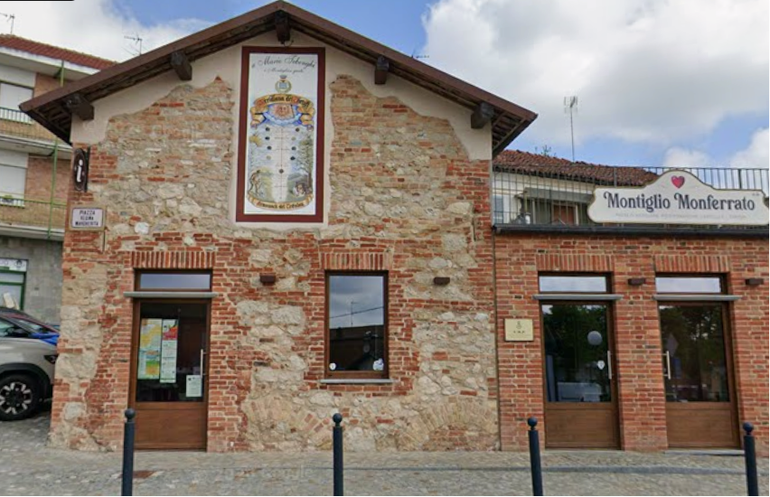
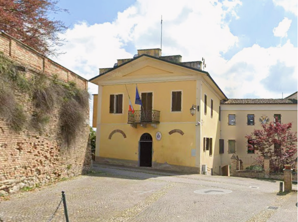
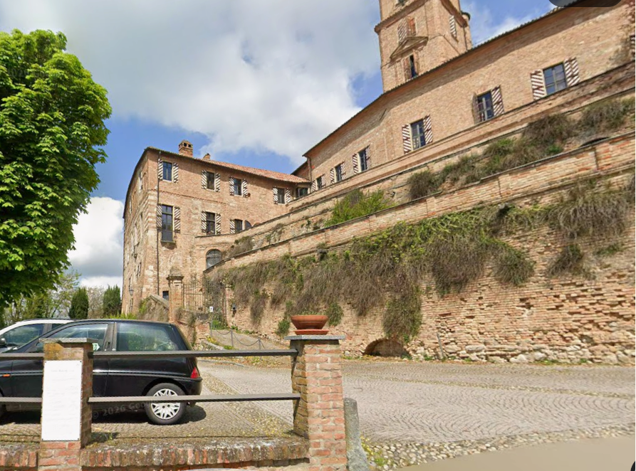

Punto Accoglienza 1
Ufficio Turistico
Piazza Regina Margherita 18

Benvenuti a Montiglio Monferrato, un paese che ti accoglie
Montiglio Monferrato vuole offrire un’esperienza di visita piacevole per tutti: abbiamo raccolto queste informazioni per aiutare persone con disabilità, famiglie con bambini, anziani, accompagnatori e visitatori con esigenze specifiche.
Le informazioni sulla accessibilità sono state finanziate da

Se vuoi arrivare subito alla risposta giusta, scegli il pulsante più adatto:
Si consiglia di consultare la mappa prima della visita per pianificare il percorso più adatto alle proprie esigenze.
Tutti i Sabato e Domenica l'Ufficio Turistico in Piazza Regina Margherita è aperto: i volontari della Pro Loco sono a disposizione per fornire informazioni e supporto. Il Punto Accoglienza presso la Sala Consiliare del Comune di Montiglio Monferrato è aperto in occasione delle visite guidate e per eventi speciali.
Ufficio Turistico
Piazza Regina Margherita 18

Entrata Sala Consiliare presso il Comune di Montiglio Monferrato
Piazza Umberto I

Il personale e i volontari potranno fornire indicazioni sui percorsi, sulle attività in programma e sui servizi disponibili.
Sono a disposizione parcheggi agevoli per visitare i principali punti di interesse del paese.
Parcheggi davanti alla Pieve di San Lorenzo.
Via Padre Carpignano
Pieve di San Lorenzo

Parcheggio riservato sullo spiazzo in Via Torino.
Via Torino

Parcheggio in piazza e dietro alla Chiesa di San Rocco.
Piazza Regina Margherita

Per visitare il centro storico intorno al Castello e per chi partecipa al Walking Tour offerto da Visit LMR.
Piazza Umberto I

È possibile salire con la vettura fino al sagrato della Pieve per il tempo limitato della visita ed in caso di necessità.

La Chiesa di Sant'Andrea presenta gradini di accesso.
Restano invece accessibili:
Si segnala la presenza di alcuni tratti con pavimentazione in porfido ed in lieve salita.
Sono disponibili servizi igienici attrezzati per persone con disabilità:
Sono inoltre presenti servizi igienici standard in Piazza Regina Margherita, presso la Pieve di San Lorenzo, nel cortile del Comune in piazza Umberto I.
Per migliorare l'accoglienza e predisporre eventuali servizi dedicati è possibile comunicare in anticipo le proprie esigenze contattando i volontari della Pro Loco di Montiglio Monferrato.
Email: infopointmontiglio@gmail.com
Telefono: 391 7277165
Le comunicazioni sulla accessibilità al paese di Montiglio Monferrato sono realizzate grazie al sostegno della Fondazione CRT nell'ambito del programma "Eventi for All", che promuove eventi inclusivi e accessibili fondati su sostenibilità ambientale, protagonismo giovanile e valorizzazione del volontariato, con l'obiettivo di generare partecipazione e valore per il territorio.